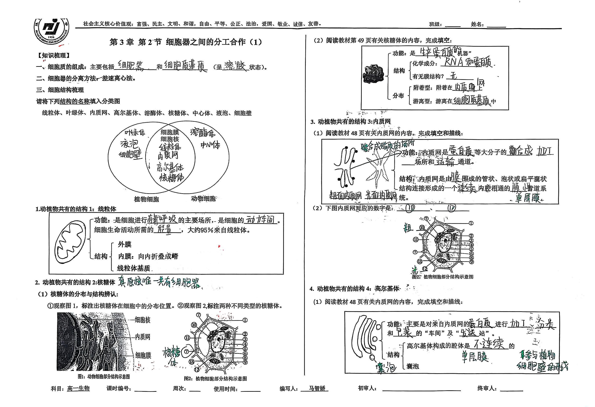
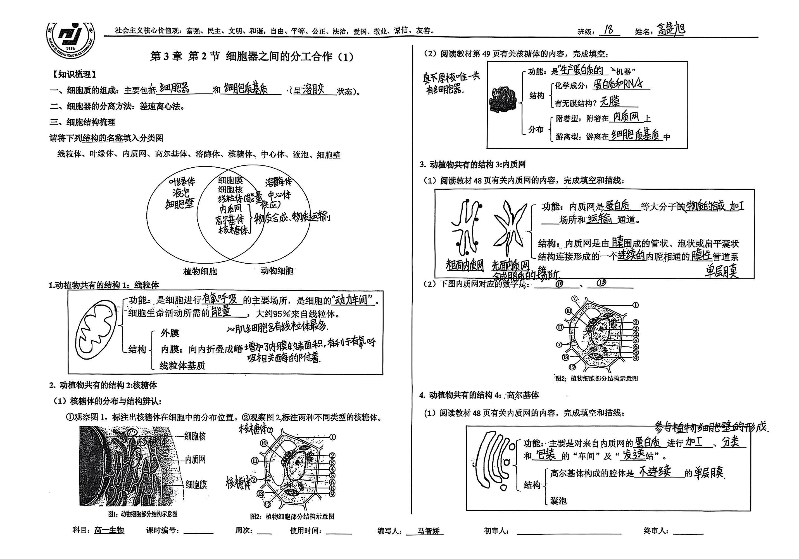
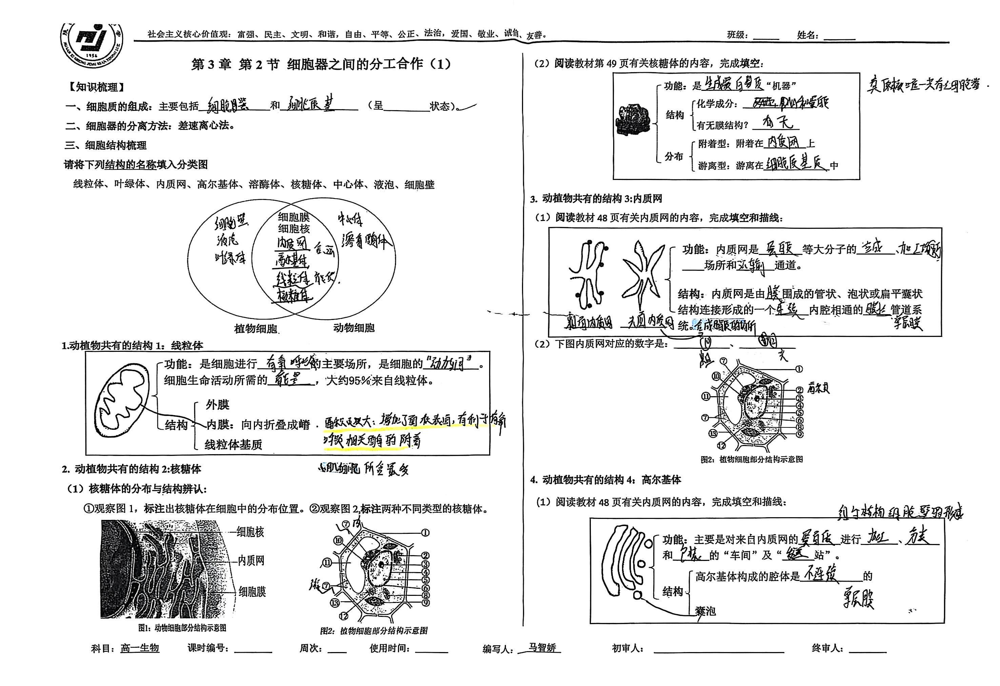
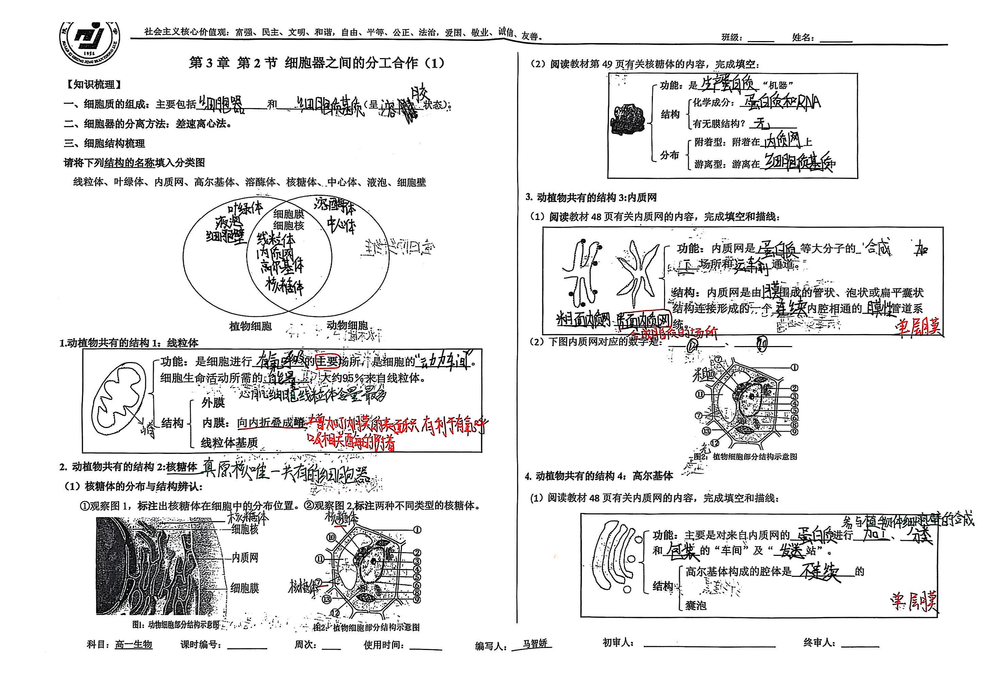
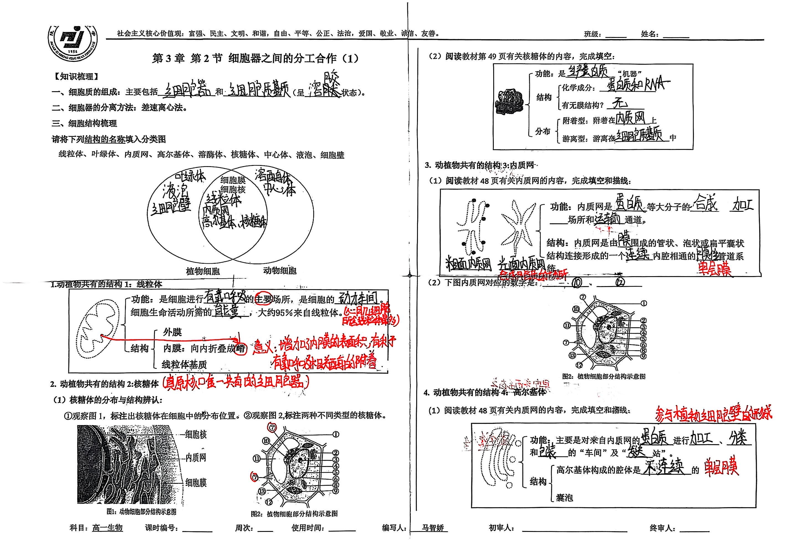
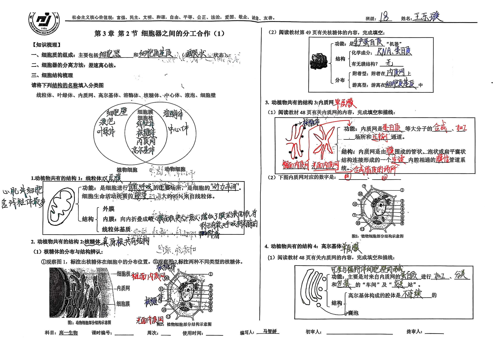
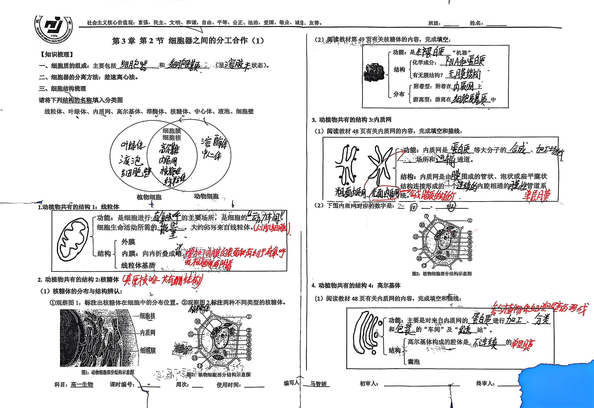

高一（18）班 繆苏禾

1 / 2
图片替换规则：将导学案图片放入 `static/images/` 目录，文件名可采用班级+学生+序号的命名，例如：
`导学案_高一(18)班_学生名_01.jpg`、`导学案_高一（18）班_学生名_02.jpg`。在本页将路径加入 `images` 数组即可展示。
高一（18）班 高楚旭

1 / 2
高一（18）班 李珈如

1 / 2
高一（18）班 鲁亚衡

1 / 2
高一（18）班 乔宇强

1 / 2
高一（18）班 王乐璇

1 / 2
高一（18）班 王楠

1 / 2
教学设计工具
教学目标生成器
根据课程标准自动生成教学目标
活动设计模板
提供丰富的课堂活动设计模板
评价量规制作
帮助教师制作科学的评价量规